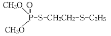
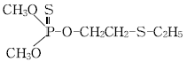
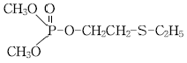
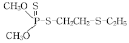

식물보호기사 (2006-03-05 기출문제)
1과목: 식물병리학
1. 배나무 불마름병 방제법에 대한 설명으로 틀린 것은?
- 병든 가지는 병환부로부터 10㎝ 이상 아래쪽부터 잘라내어야 한다.
- Streptomycin과 옥시테트라사이클린을 번갈아 사용하는 것이 바람직하다.
- 전정도구는 매번 10% 차아염소산 용액으로 소독하여야 한다.
- 아직까지는 저항성 품종이 없다.
(정답률: 46%)

2. 가지과 풋마름병(Ralstonia solanacearum)의 방제법으로 옳지 못한 것은?
- 석회를 시용하여 토양산도를 조절한다.
- 여름에 지온을 높게 유지한다.
- 담수(3개월 정도)로서 토양소독을 한다.
- 가능한 순치기는 고온 건조 시에 한다.
(정답률: 69%)
3. 소나무잎떨림병(엽진병)은 어떤 포자로 전염되는가?
- 자낭포자
- 분생포자
- 병자포자
- 후막포자
(정답률: 66%)
4. 병원체에 대하여 완전면역성을 가지고 있는 것은?
- 내성
- 세포질저항성
- 진정저항성
- 비기주저항성
(정답률: 29%)
5. 파이토플라스마에 의해서 발생하는 병은?
- 보리황화위축병
- 벚나무빗자루병
- 오동나무빗자루병
- 벼누른오갈병
(정답률: 88%)
6. 다음 중 세균에 의해서 일어나는 병은?
- 벼도열병
- 보리깜부기병
- 벼오갈병
- 벼희빛잎마름병
(정답률: 65%)
7. 식물병의 핵산 분석에 의한 진단 방법은?
- PCR(Polymerase chain reaction)을 이용한 병원체 동정
- Bacteriophage에 의한 진단
- 효소결합항체법에 의한 진단
- 황산구리법에 의한 진단
(정답률: 76%)
8. 토마토 시설재배에서 자외선 차단 비닐을 이용하여 방제효과를 얻을 수 있는 병은?
- 풋마름병
- 배꼽썩음병
- 잿빛곰팡이병
- 모자이크병
(정답률: 79%)
9. 오이흰가루병에 대한 설명으로 맞는 것은?
- 담자균이다.
- 자낭각으로 월동한다.
- 수박에도 침해 한다.
- 방제약제로 흔히 EBI제가 있는데 연용 시 약효증진효과가 있다.
(정답률: 61%)
10. 느티나무흰별무늬병(백성병)의 외부병징과 표징은?
- 부정형의 병반으로 확대 중앙부분은 회백색이 되며, 병자각이 형성된다.
- 부정형 병반이 갈색을 띠고, 병반 내부는 회갈색을 띠며 자좌가 형성된다.
- 잎의 양면에 적갈색 반점이 나타나며, 나중에 갈색, 회갈색의 원형이 된다. 흑색, 흑갈색의 작은 돌기(자실체)가 나타난다.
- 앞에 윤문상의 갈색무늬가 나타나며, 소립점(분생자퇴)이 동심원형으로 나타난다.
(정답률: 64%)
11. 다음 중 비기주작물로 1~3년간 윤작하여 방제할 수 있는 병은?(오류 신고가 접수된 문제입니다. 반드시 정답과 해설을 확인하시기 바랍니다.)
- 풋마름병
- 흰비단병
- 무사마귀병
- 자주날개무늬병
(정답률: 56%)
12. Trichoderma속 균에 의하여 방제효과를 얻을 수 있는 병은?
- Rhizoctonia속 균에 의한 병
- Fusarium속 균에 의한 병
- Streptomyces속 균에 의한 병
- Agrobacterium속 균에 의한 병
(정답률: 53%)
13. 토마토시들음병과 풋마름병을 간이진단법으로 구별하고자 한다. 이 때의 단서가 되는 점은 다음의 어느 것인가?
- 식물의 위조 여부
- 도관부의 갈변 유무
- 세균점액의 누출 여부
- 암조의 생성 여부
(정답률: 83%)
14. 다음 바이러스 중 길이가 가장 긴 것은?(오류 신고가 접수된 문제입니다. 반드시 정답과 해설을 확인하시기 바랍니다.)
- Rhabdovirus
- Potyvirus
- Closterovirus
- Carlavirus
(정답률: 68%)
15. 식물 병원 바이러스와 식물 병원 파이토플라스마의 차이점으로 옳은 것은?
- 바이러스는 RNA를 함유하고 있으나, 파이토플라스마는 RNA가 없다.
- 바이러스는 세포벽이 있으나, 파이토플라스마는 세포벽이 없다.
- 바이러스는 tetracycline에 대하여 저항성이나, 파이토플라스마는 감수성이다.
- 바이러스는 매개충이 옮겨 주나, 파이토플라스마는 매개충에 의하여 전파되지 않는다.
(정답률: 65%)
16. 다음의 감자 병해 중 Streptomyces scabies에 의해 발생하는 병은?
- 감자가루더뎅이병
- 감자더뎅이병
- 감자둘레썩음병
- 감자암종병
(정답률: 75%)
17. 사과나무 줄기나 가지에만 발생하고, 병 무늬는 처음에는 갈색 또는 약간의 붉은색을 띤 수침상이며, 껍질을 벗기면 알코올 냄새가 난다. 자낭균에 속하는 이 병은?
- 사과나무부란병
- 사과나무검은별무늬병
- 사과겹무늬썩음병
- 사과탄저병
(정답률: 75%)
18. 배추흰무늬병의 병징, 전염경로 및 방제법을 설명한 것으로 틀린 것은?
- 강우기 및 시비량이 부족 시 병의 유발을 촉진시킨다.
- 잎에 발생하고 잎 표면에 갈색반점이 생기며, 나중에 회백색, 백색 병반을 형성한다.
- 병원균은 주로 균핵으로 지표면에서 월동한다.
- 공기 전염한다.
(정답률: 28%)
19. 다음 중 식물이 어떤 병에 잘 걸리는 성질은?
- 감수성
- 면역성
- 병 회피
- 저항성
(정답률: 89%)
20. 다음 병중에서 병원균이 순활물기생균(純活物寄生菌)에 속하는 것은?
- 강낭콩탄저병
- 가지풋마름병
- 배나무붉은별무늬병
- 감자역병
(정답률: 72%)
2과목: 농림해충학
21. 다음 중 해충의 이름과 학명이 잘못 연결된 것은?
- 벼멸구 - Nilaparvata lugens
- 복숭아혹진딧물 - Myzus persicae
- 점박이 응애 - Tetranychus urticae
- 목화진딧물 - Spodoptera litura
(정답률: 37%)
22. 매미목 곤충의 형태적 특징 중 맞지 않는 것은?
- 더듬이는 대개 3~10마디이며 실 또는 털모양이다.
- 날개가 없는 경우는 홑눈도 없다.
- 턱수염과 입술수염이 있다.
- 앞날개와 뒷날개는 모두 막절이다.
(정답률: 34%)
23. 학명 Thecodiplosis japonensis Uchida et Inouye는 어떤 해충인가?
- 사철나무혹파리
- 향나무혹파리
- 솔잎혹파리
- 밤나무혹벌
(정답률: 69%)
24. 소나무재선충의 매개충은 어느 것인가?
- 솔잎혹파리
- 솔껍질깍지벌레
- 솔나방
- 솔수염하늘소
(정답률: 77%)
25. 곤충의 먹이 탐색에 이용되지 않는 것은?
- 시각적 자극
- 후각적 자극
- 촉감
- 맛
(정답률: 61%)
26. 포식곤충 중 유충과 성충이 모두 포식성이 아닌 것은?
- 무당벌레
- 딱정벌레
- 침노린재
- 꽃등애
(정답률: 50%)
27. 기주 범위가 매우 넓어 침, 활엽수로 모두 가해하는 매미나방의 학명은?
- Euproctis subflava
- Cydia kurokoi
- Lymantria dispar
- Diplosis mori
(정답률: 64%)
28. 해충문제의 심각성이 커지는 이유가 될 수 없는 것은?
- 지금까지 없던 해충이 다른 곳으로부터 침입했을 때
- 해충이 유전적으로 변화했을 때
- 해충의 밀도가 이상 증가했을 때
- 천적의 밀도가 증가했을 때
(정답률: 89%)
29. 곤충의 4시기 중에서 유충에서 번데기로 촉진작용을 하는 호르몬은 어떤 것인가?
- Allomone
- Pheromone
- 앞가슴(前胸腺) 호르몬
- Allata체 호르몬
(정답률: 44%)
30. 배나무방패벌레는 배나무를 비롯하여 많은 활엽정원수 앞뒷면에서 흡즙 가해한다. 이 해충의 분류학적 위치는?
- 매미목
- 노린재목
- 나비목
- 딱정벌레목
(정답률: 59%)
31. 수확 후 포장관리법으로 바람직하지 않은 것은?
- 감자나방이 많이 발생한 포장에서는 수확 후 잔해물을 수거하여 소각한다.
- 온실가루이를 방제하기 위하여 토마토 수확 후 하우스 내 잔해물을 수거 소각한다.
- 벼 수확후 논두렁을 불태운다.
- 오이 하우스 내 아메리카잎굴파리가 발생한 포장에서는 수확 후 잔해물을 소각한다.
(정답률: 68%)
32. 해충의 발생을 예찰하기 위한 방법으로 가장 부적절하게 설명한 것은?
- 실험적 예찰법
- 설문에 의한 예찰법
- 야외조사 및 관찰에 의한 예찰법
- 통계적 예찰법
(정답률: 87%)
33. 해충 개체군 크기의 변동요인 중 밀도 의존적 요인이 아닌 것은?
- 먹이의 양
- 기생자
- 종내경쟁
- 산불
(정답률: 81%)
34. 다음 해충 중 유충이 과일 속으로 뚫고 들어가 가해하는 해충은?
- 사과굴나방
- 복숭아삼식나방
- 포도유리나방
- 배나무이
(정답률: 76%)
35. 톡톡이목의 특징이 아닌 것은?
- 외부생식기가 없다.
- 입틀이 머리틀에 고정되어 있다.
- 더듬이의 모든 마디에 근육이 있다.
- 날개가 없다.
(정답률: 32%)
36. 벼물바구미에 대한 설명 중 틀린 것은?
- 단위생식을 한다.
- 유충으로 월동한다.
- 유충이 땅 속에서 뿌리를 가해한다.
- 성충은 벼 잎을 가해한다.
(정답률: 68%)
37. 곤충의 혈림프로 방출되는 탄수화물의 저장태는 무엇인가?
- 글리코겐
- 무코다당류
- 키틴
- 트레할로스
(정답률: 58%)
38. 곤충에 대한 설명으로 적합지 않은 것은?
- 호흡 시 혈액 속의 헤모글로빈에 의해 산소를 공급받는다.
- 연속되는 탈피를 통해 몸을 키운다.
- 기관호흡을 한다.
- 완전변태류의 경우 번데기 과정을 거친다.
(정답률: 85%)
39. 애멸구의 특징을 설명한 것 중 잘못된 것은?
- 암컷의 몸은 흑갈색이다.
- 머리의 돌출부는 장방형에 가깝다.
- 수컷의 가운데 가슴 등면은 흑색이다.
- 암컷의 가운데 가슴 등면에는 황백색의 긴 무늬가 있다.
(정답률: 46%)
40. 다음 천적류 중 해충에 기생하는 천적이 아닌 것은?
- 노린재류
- 맵시벌류
- 알좀벌류
- 고치벌류
(정답률: 73%)
3과목: 재배학원론
41. 작물의 생산성을 극대화하기 위한 3요소는?
- 유전성, 환경조건, 생산자본
- 유전성, 환경조건, 재배기술
- 유전성, 지대, 생산자본
- 환경조건, 재배기술, 토지자본
(정답률: 80%)
42. 잎의 뒷면에 광택화, 은회색, 청동색의 피해 증상을 나타내는 대기 오염물은?
- 불화수소
- 오존
- PAN
- 이산화유황
(정답률: 65%)
43. 잡종강세를 이용한 1대 잡종종자로 이용되고 있지 않는 것은?
- 보리
- 옥수수
- 토마토
- 배추
(정답률: 20%)
44. 종자량이 가장 많이 드는 파종 양식은?
- 조파
- 점파
- 산파
- 적파
(정답률: 73%)
45. 작물의 내동성을 증대시키는 생리적 조건으로 맞는 것은?
- 원형질의 점도가 낮아야 한다.
- 당분 함량이 적어야 한다.
- 지유 함량이 적어야 한다.
- 전분 함량이 많아야 한다.
(정답률: 55%)
46. 토양 중의 유기물의 역할이 아닌 것은?
- 보수 및 보비력 증대
- 입단의 형성
- 완충력 감소
- 양분 및 CO2의 공급
(정답률: 70%)
47. [(A×B)×B]×B와 같은 교잡에서 내병성을 A형질에서 B형질로 옮기려 할 때 쓰는 육종방법은?
- 다계교잡법
- 여교잡법
- 파생계통육종법
- 집단육종법
(정답률: 75%)
48. 답리작 보리재배에서 과습으로 인하여 가장 먼저 나타나는 피해는?
- 양분흡수저해
- 호흡저해
- 뿌리의 신장억제
- 유해물질에 의한 피해
(정답률: 68%)
49. 벼의 추락현상이 발생할 때 벼뿌리를 상하게 하는 주된 물질은?
- 황화수소
- 탄산가스
- 불화수소
- 메탄가스
(정답률: 66%)
50. 벼 심층시비의 가장 큰 잇점은?
- 뿌리의 흡수력을 촉진시킨다.
- 뿌리의 만연권역을 넓힌다.
- 토양질소의 농도를 연하게 한다.
- 암모니아의 탈질을 방지한다.
(정답률: 50%)
51. 식물체가 물속에 잠겨 무기호흡이 진행될 때 체내에 많이 집적되는 물질은?
- 피루브산
- Ethanol
- 포도당
- 초산(Acetic acid)
(정답률: 56%)
52. 작물의 수발아 방지를 위해서 발아억제제의 최적살포시기는?
- 출수 후 10일
- 출수 후 20일
- 출수 후 30일
- 출수 후 40일
(정답률: 51%)
53. 작물체내에서 전류이동(轉流移動)이 가장 잘 이루어져서 결핍될 경우 하위 잎에 결핍증상이 나타나는 성분은?
- N
- Fe
- Si
- Ca
(정답률: 60%)
54. 유전형질이 재배면에서 균일하고 영속적인 개체들의 집단을 가려내어 무엇이라고 하는가?
- 종
- 아종
- 품종
- 계통
(정답률: 52%)
55. 작물의 요수량(要水量)을 잘 설명한 것은?
- 건물(乾物) 1g을 생산하는데 소비된 수분량
- 생초(生草) 1g을 생산하는데 소비된 수분량
- 개화에 필요한 수분량
- 식물체내에 들어있는 수분 함유량
(정답률: 76%)
56. 연작의 해가 가장 작은 작물은?
- 수박
- 벼
- 가지
- 인삼
(정답률: 63%)
57. 광합성에 가장 효과적인 광은?
- 녹색광
- 황색광
- 적색광
- 주황색광
(정답률: 79%)
58. 포도의 무핵과 형성에 이용되는 생장조절제는?
- Gibberellin
- B-995
- CCC
- MH-30
(정답률: 69%)
59. 장명종자(長命種子)에 속하는 것은?
- 녹두, 오이
- 메밀, 고추
- 벼, 완두
- 쌀보리, 목화
(정답률: 29%)
60. 버어널리제이션에 관여하는 요인이 가장 큰 것은?
- 온도
- 산소
- 강우
- 토양
(정답률: 78%)
4과목: 농약학
61. 다음 중 살균제의 작용기작에 해당되지 않은 것은?
- SH기 저해
- 전자전달 저해
- 산화적 인산화 저해
- Synapse 전막 저해
(정답률: 46%)
62. 다음 중 농작물 또는 기타 저장물에 해충이 모이는 것을 막기 위해 쓰이는 기피제(Repellent)로 쓰이는 것은?
- Chlorobenzilate
- Dimethyl phthalate
- Demeton-s-methyl
- Methyl bromide
(정답률: 28%)
63. 리바이지드 유제 30%를 500배로 희석해서 10a당 8말을 살포하여 해충을 방제하고자 할 때, 리바이지드 유제 30%의 소요량은?
- 144㏄
- 188㏄
- 244㏄
- 288㏄
(정답률: 55%)
64. 제초제를 처리방법에 따라 분류하면?
- 토양 및 경엽처리 제초제
- 선택성 및 비선택성 제초제
- 호르몬형 및 비호르몬형 제초제
- 이행형 및 접촉형 제초제
(정답률: 68%)
65. 농약의 살포방법 중 유제, 수화제. 수용제 등에서 조제한 살포액을 분무기를 사용하여 무기분무(airless spray)에 의하여 안개모양으로 살포하는 방법은?
- 분무법
- 미스트법
- 스프링클러법
- 폼스프레이법
(정답률: 59%)
66. 수화제(wettable powder)를 물에 풀면 어떤 액이 되는가?
- 유탁액
- 현탁액
- 투명한 수용액
- 유용액
(정답률: 72%)
67. 급성독성의 강도를 비교하는 지표로서 공시품으로 주로 사용되는 실험동물은?
- 개
- 고양이
- 물고기
- 쥐
(정답률: 64%)
68. 농약의 안전사용기준에 대한 설명으로 가장 적합한 것은?
- 농약의 살포횟수와 수확 전 최종살포시기를 제한한다.
- 수도작 및 잔디용 농약 등에 필요한 기준이다.
- 현재 등록되어있는 전품목에 대해 기준이 설정되어졌다.
- 작물의 약해 및 약효를 방지하기 위한 기준이다.
(정답률: 37%)
69. 다음 중 농약의 보조제(supplement agent)에 해당하는 것은?(오류 신고가 접수된 문제입니다. 반드시 정답과 해설을 확인하시기 바랍니다.)
- 유인제
- 전착제
- 기피제
- 유화제
(정답률: 32%)
70. 석회보르도액은 어느 것에 해당하는가?
- 황제
- 염소제
- 구리제
- 비소제
(정답률: 74%)
71. 농약안전사용기준을 지키지 않은 농산물에서 잔류허용량 이상의 잔류량이 검출되었을 때의 조치사항은?
- 해당 농산물의 폐기 및 법규에 의한 처벌
- 해당 농산물의 폐기만 한다.
- 해당 농산물은 판매가 가능하며, 법규에 의한 처벌만 가능하다.
- 아무런 관계가 없다.
(정답률: 76%)
72. 농약에 의한 약해 발생의 요인과 가장 거리가 먼 것은?
- 작물의 감수성 정도
- 약제 이화학 특성 및 약제 간 상호작용
- 환경조건
- 병해충 발생정도
(정답률: 62%)
73. 농약 중독 사태 발생 시, 취해야 할 응급조치로 적당하지 않은 것은?
- 경구중독일 경우, 따뜻한 물이나 소금물로 세척한다.
- 약물이 장내로 들어갈 염려가 있을 시는 황산마그네슘(15~20g) 물에다 독물의 흡착을 위해 활성탄이나 규조토 등을 타서 먹여 배설시킨다.
- 흡입중독일 경우, 체온을 식히기 위하여 찬물로 씻어준다.]
- 경피중독일 경우, 오염된 의복을 벗기고 부착된 약제를 비눗물로 씻는다.
(정답률: 64%)
74. 아바멕틴(1.8%)유제, 싸이헥사틴(25%)수화제의 농약으로 쉽게 방제할 수 있는 적용해충은?
- 역병 및 노균병
- 진딧물류
- 응애류
- 탄저병 및 세균병
(정답률: 45%)
75. 비선택성 제초제가 아닌 것은?
- Glyphosate ammonium
- Paraquat
- Cinosulfuron
- Glyphosate
(정답률: 53%)
76. 농약의 분류 중 유효성분 조성에 따른 분류에 해당하는 것은?
- 유기인계
- 살충제
- 살균제
- 유인제
(정답률: 81%)
77. 다음 약제 중 화학불임제가 아닌 것은?
- Tepa
- Aziridine
- Apholate
- Benzylbenzoate
(정답률: 63%)
78. 농약의 독성과 관련된 설명 중 옳지 않은 것은?
- 농약은 유해한 생물에만 유효하고 그 밖의 생물에는 무독해야 한다.
- 병, 해충의 내성으로 인한 약효 저하로 고독성농약 등록이 늘어가고 있다.
- 독성이 약한 농약도 체내에 다량 섭취되면 독작용을 나타낸다.
- 농약의 독성강도에 따라 적절한 주의를 기울여 피해를 최소화한다.
(정답률: 62%)
79. 유기유황제에 대한 설명으로 옳은 것은?
- 유기유황제 중 Thiram은 흰가루병에 특효이다.
- 수도용 살균제로 널리 사용되고 있다.
- 무기황제보다 가격이 싸다.
- 주요 약제로는 propineb, mancozeb 등이 많이 사용되고 있다.
(정답률: 54%)
80. 메타시스톡스(thiono제)의 구조식은?




(정답률: 45%)
5과목: 잡초방제학
81. 다음 잡초방제 방법 중 초생재배 방법은 어느 것인가?
- 오리, 어패류를 이용하여 잡초 생육을 억제한다.
- 인접식물을 독성을 나타내는 물질을 분비하는 식물을 심어 잡초발생을 경감시킨다.
- 잡초에 특이적으로 기생하는 병원균을 이용하여 방제한다.
- 과수원이나 나지상태의 포장에 피복작물을 재배한다.
(정답률: 53%)
82. 경합우위성의 획득확률에 영향을 주는 요인은?
- 등숙율과 개화기
- 등숙율과 발아율
- 조기발아성과 생장율
- 조기발아율과 등숙율
(정답률: 59%)
83. 다음 중 재배지별, 발생 잡초 종류, 생존연한에 따른 분류, 과명 등이 모두 바르게 연결된 것은?
- 논-너도방동사니-다년생-방동사니과
- 논-매자기-일년생-화본과
- 밭-메꽃-일년생-국화과
- 밭-사마귀풀-일년생-방동사니과
(정답률: 70%)
84. 다음 경합의 유형을 설명한 것 중에서 맞는 것은?
- 종내경합은 종간경합에 비해 경합양상이 치명적이다.
- 농경지에서 종내경합은 흔히 잡초에서 볼 수 있다.
- 종간경합은 경합을 최대화하려는 경향이 있다.
- 종간경합은 초기경합이 빨라지고 경합량도 증가된다.
(정답률: 44%)
85. 잡초종자의 휴면이 종피에 기인한 것이 아닌 것은?
- 가스 교환의 방해
- 물의 투수성 방해
- 배의 불완전 또는 미숙
- 배의 생장에 대한 기계적 장해
(정답률: 49%)
86. 다음 다년생 잡초 중 지하경 형성 위치가 표토로부터 가장 깊은 잡초는?
- 올미
- 너도방동사니
- 올챙이고랭이
- 올방개
(정답률: 52%)
87. 작물과 잡초의 경합요인 중 가장 관련이 적은 것은?
- 잡초의 종류
- 잡초의 밀도
- 잡초의 생육시기
- 잡초의 영양상태
(정답률: 54%)
88. 다음 잡초들 중 유성번식(종자번식)과 영양번식 모두가 용이하여 방제가 상대적으로 어려운 초종은 어느 것인가?
- 가래
- 물달개비
- 알방동사니
- 올챙이고랭이
(정답률: 31%)
89. 제초제의 물리적 선택성에 영향을 끼치는 요인이 아닌 것은?
- 제초제 사용량
- 제초제 제형
- 제초제 처리방법
- 제초제 주성분함량
(정답률: 33%)
90. 작물과 잡초의 경합에 대한 설명으로 옳은 것은?
- 장간이고 분얼이 많은 벼가 잡초와의 경합에서 유리하다.
- 콩은 주간 의존형이며, 단간의 직립형이 잡초에 대한 경합에서 유리하다.
- 만파하고 소식재배의 경우, 잡초와의 경합에서 유리하다.
- 초형이 다른 작물을 재배하거나 윤작하면 다양한 잡초가 많이 발생하여 잡초와의 경합에서 불리하다.
(정답률: 47%)
91. 다음 중 사초과(방동사니) 잡초에 해당되지 않는 것은?
- 올챙이고랭이
- 올방개
- 올미
- 파대가리
(정답률: 57%)
92. 최근 우리나라에서 설포닐우레아계 제초제에 대한 저항성 생태형으로 출현한 것이 아닌 것은?
- 피
- 미국외풀
- 물달개비
- 알방동사니
(정답률: 52%)
93. 다음의 잡초 중 외형상 초형이 가장 작은 잡초로 구성된 것은?
- 가막사리, 망초
- 어저귀, 방동사니
- 물달개비, 환삼덩굴
- 올미, 선피막이
(정답률: 36%)
94. 환경친화형 제초제의 구비조건 중 해당되지 않은 것은?
- 제초효과를 나타낸 이후 활성성분의분해가 빨라야 한다.
- 토양의 하부이동이 낮고 지하수 오염이 적어야 한다.
- 잡초를 방제하되 다른 생물(비표적 생물)에 대한 영향이 적어야 한다.
- 인축독성이 높더라도 천연에서 생산되는 것이라면 적합하다.
(정답률: 76%)
95. 참깨 파종 전에 잡초를 없애기 위해 비선택성 제초제 그라목손을 밭 토양 전면에 골고루 살포 하였다. 바르게 설명한 것은?
- 다음날 파종해도 참깨 발아에 지장이 없다.
- 경운을 한 후 파종해야 한다.
- 2~3일간 방치하여 토양에 있는 약제성분을 휘산 시킨 후 파종해야 한다.
- 고사된 잡초를 완전제거한 후 파종량을 약간 증가해 주는 것이 안전하다.
(정답률: 29%)
96. 제초제는 잡초를 선택적으로 고사시키는 경우가 많은데 그 이유들 중에서 적당하게 기술되지 않은 것은?
- 잡초 생리특성, 제초제 서일, 생육단계, 처리환경 등에 따라 잡초의 제초제 흡수정도가 초종마다 다를 수 있기 때문이다.
- 식물체내로 흡수된 제초제가 작용점으로 이동하는데 있어서 주변의 생리조건이 잡초 종류마다 다를 수 있기 때문이다.
- 동일계열의 제초제는 최종 공격지점(효소단백질)이 같으므로 똑같은 정도의 효과를 나타내는 것이 일반적이다.
- 잡초는 제초제를 무독화시키는 능력이 있으며, 그 독성이 잡초종, 생육단계, 환경조건에 따라 다를 수 있기 때문이다.
(정답률: 50%)
97. 최근 문제되고 있는 제초제 저항성 잡초의 방제 방법으로 가장 적당한 방법은?
- 동일한 제초제를 연용한다.
- 제초제 사용량을 늘린다.
- 제초제와 전착제를 혼용한다.
- 제초제를 특성에 따라 순환 사용한다.
(정답률: 77%)
98. 다음 중 식물의 분류체계에 맞는 것은?
- 강-문-목-과-속-종
- 문-강-과-목-속-종
- 문-강-목-과-종-속
- 문-강-목-과-속-종
(정답률: 65%)
99. 두 제초제를 혼합처리 시 상승(synergistic)효과란 어떤 것을 의미하는가?
- 두 제초제를 혼합처리 시 단독처리 때 보다 효과가 적은 것을 의미함
- 두 제초제를 혼합처리 시 단독처리 때 보다 효과가 큰 것을 의미함
- 두 제초제를 혼합처리 시 단독처리와 효과가 같은 것을 의미함
- 두 제초제를 혼합처리 시 식물의 생리적 장애현상을 의미함
(정답률: 81%)
100. 논에 다년생 잡초인 올방개가 비교적 많이 발생되어 제초제를 선택하고자 할 경우, 어떤류의 제초제가 효과적인가?
- 마세트가 혼합된 제초제
- 벤푸러세이트가 혼합된 제초제
- 모리네이트가 혼합된 제초제
- 에스프로카부가 혼합된 제초제
(정답률: 59%)